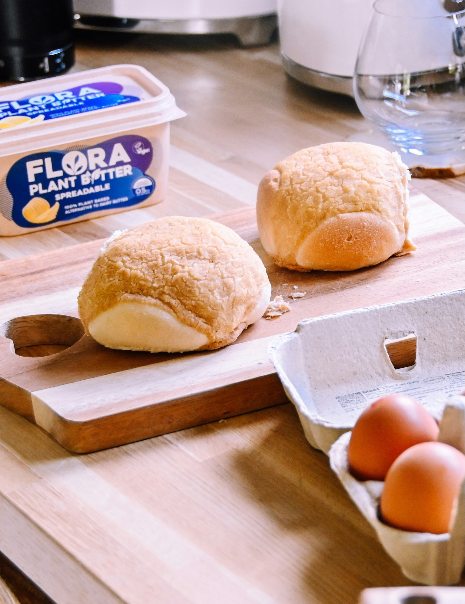

Carrot bread rolls

A recipe for Finnish carrot bread rolls. You can also make them without carrots or replace the carrots with cheese, seeds or something else you want to try.
Ingredients
- 50 g yeast
- 5 dl milk or water
- 2 tsp salt
- 1 tbsp sugar (or honey)
- 50 g butter
- 10 dl bread roll flour (all-purpose flour is okay too)
- 3 dl grated carrots (2-3 carrots)
Steps
- Dissolve the yeast in lukewarm milk or water.
- Combine flour, salt, grated carrots, and sugar (or honey).
- Mix everything together and add (soft) butter. (Mixing with hands might be easier as the dough gets thicker.)
- Cover the dough (you can use a clean kitchen cloth) and set it aside for 45 - 60 minutes, until it has doubled in size.
- Roll the dough into long bars and cut these into pieces. Roll each portion into a ball and set on the baking sheets.
- Cover the rolls with a kitchen cloth for 20-30 minutes.
- Bake the rolls on the middle level of the oven for 10-15 min (225 degrees).
Home